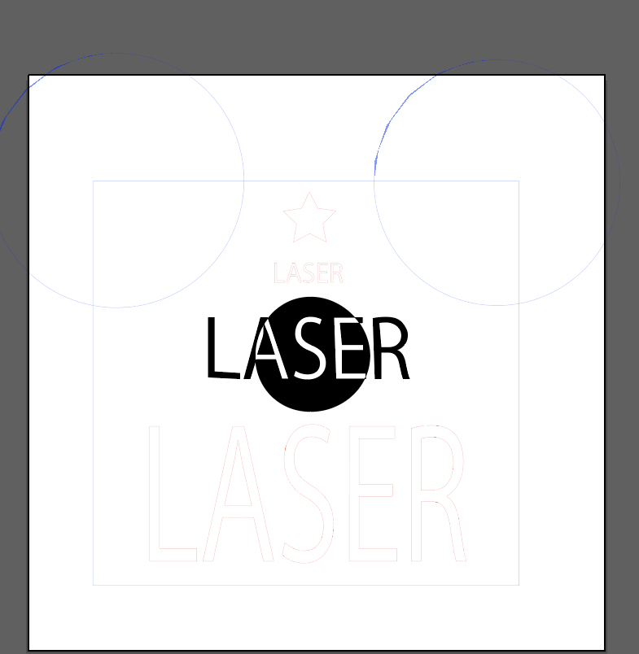

-レーザーカッターとは-
・レーザーは、虫眼鏡で物を焼くのと同じ原理。
・素材で塩化ビニル、合皮、金属、ミラーは使用できない。
-手順-
1.電源を入れるために鍵を回す。ピーと警報音がなり、
しばらくしてピピピピーとなったら、準備完了。
2.カットする材料の厚みを、のぎすで把握する。
3.レーザーカッターとセットのパソコンで
ウインドウ→スウォッチ→スピーディ→左右（U）
→詳細設定→ジョブコントロール→ジョブサイズに最小化
→材料設定
・（今回は）プラスチック
・標準500カラー
・解像度500
・カラー
を選択。
右クリック→ジョブの再起動
4.ヘッドを左上に戻して、テーブルは1番下まで下げる。
5.テーブルにカットする素材を左端の上にセットする。
6.フォーカスツールをレーザーヘッドに引っかけ、
引っ掛けたフォーカスツールが倒れるまでテーブルをあげる。
-データ-


-刺繍ミシン-